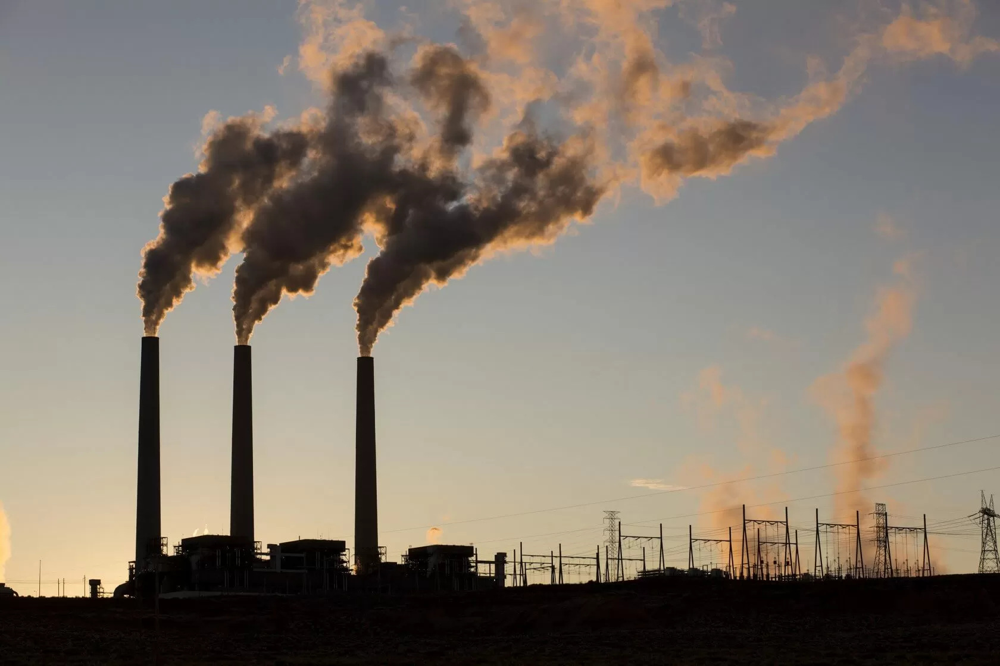

What is Energy Production?
Energy production refers to the process of generating usable power from natural resources, which is then converted into electricity or other forms of energy to meet the demands of homes, industries, and transportation. This process typically involves extracting energy from various sources, such as fossil fuels (coal, oil, natural gas), nuclear reactions, or renewable sources (solar, wind, hydropower). Each energy source requires specific technologies and processes, such as burning fuels to create steam for turbines or harnessing sunlight through solar panels to generate electricity. Energy production is essential for supporting modern life and sustaining economic growth.
The methods of energy production vary significantly, depending on the source of energy being used. Non-renewable sources, like fossil fuels and nuclear power, remain the dominant forms of energy production globally, but the shift towards renewable energy sources is growing due to concerns over environmental impact and sustainability. Renewable energy, such as wind, solar, and hydropower, offers cleaner alternatives by producing little to no carbon emissions. As the world seeks to reduce its reliance on fossil fuels, energy production technologies are evolving to improve efficiency, lower environmental harm, and support the transition to a more sustainable and diverse energy mix.
Sources:
Fossil Fuels:
Fossil fuels include coal, oil, petroleum, and natural gas, all of which are extracted from the Earth. These energy sources have historically been the most widely used for electricity generation, heating, and transportation. However, they are finite resources, and their extraction and use contribute to environmental pollution, particularly in the form of carbon emissions that contribute to climate change.
Hydropower:
Hydropower generates energy by using a dam or diversion structure to control and alter the natural flow of a river or other water body. The flow of water turns turbines, generating electricity. It is one of the oldest and most reliable renewable energy sources, with large-scale plants providing significant amounts of power, although it can sometimes impact local ecosystems and communities.
Wind Power:
Wind power harnesses the energy of the wind by using turbines with blades that spin as wind passes over them. This mechanical energy is then converted into electricity. Wind power is a clean and renewable energy source, and its use is rapidly expanding globally, especially in regions with consistent winds.
Geothermal:
Geothermal energy is produced by harnessing heat from beneath the Earth's surface. Fluids from underground reservoirs are brought to the surface, where the heat produces steam that spins turbines to generate electricity. It is a sustainable, low-carbon energy source, although its availability depends on geographic location.
Tidal Power:
Tidal energy is generated by harnessing the natural rise and fall of tides, which is caused by the gravitational interaction between the Earth, the sun, and the moon. This energy is captured using turbines or other devices placed in tidal streams or estuaries. Tidal energy is highly predictable but is still in the experimental phase in many locations.
Solar Power:
Solar energy is captured from sunlight and converted into electricity. This can be done through photovoltaic cells (which directly convert sunlight into electricity) or concentrated solar power systems (which use mirrors or lenses to focus sunlight to heat a fluid and produce steam to spin turbines). Solar power is abundant, renewable, and produces no emissions during operation.
Nuclear Power:
Nuclear energy is generated through nuclear fission, where atoms like uranium are split, releasing energy that can be used to generate electricity. The process can also occur through nuclear decay or nuclear fusion, though fusion is still not commercially viable. Nuclear power produces large amounts of energy with low carbon emissions, but concerns over waste disposal and safety remain major challenges.
Demand:
Energy Demand refers to the total amount of energy consumed by individuals, businesses, and industries at any given time to meet their needs for heating, electricity, and transportation. Demand for energy is influenced by several factors, including population growth, economic development, technological advancements, and seasonal changes. For example, colder regions experience increased energy demand during the winter for heating, while warmer regions may see higher energy consumption in the summer due to cooling needs. As economies grow and more people gain access to modern technologies, the overall energy demand continues to rise globally.
The increase in energy demand poses both challenges and opportunities. While growing demand can strain existing energy infrastructure, it also drives innovation in energy production and consumption. The shift towards renewable energy sources, like wind and solar power, and advances in energy efficiency technologies help manage the rising demand in more sustainable ways. Energy management strategies such as smart grids, demand-side management, and improved energy storage systems are crucial for balancing supply with demand and ensuring a reliable, sustainable energy future.
Impact:
The production and consumption of energy through Earth’s natural resources has large impacts on our ecosystems, air and water quality, and climate. Traditional energy sources like fossil fuels (coal, oil, and natural gas) contribute significantly to environmental degradation by releasing harmful pollutants such as carbon dioxide, sulfur dioxide, and nitrogen oxides into the atmosphere. These pollutants contribute to global warming, air pollution, and acid rain, which can harm human health, agriculture, and wildlife. Additionally, the extraction and transportation of fossil fuels can lead to habitat destruction, oil spills, and soil contamination.
In contrast, renewable energy sources like wind, solar, and hydropower have a much lower environmental impact. These sources produce little to no emissions during operation and are generally considered environmentally friendly. However, they are not entirely without environmental costs. For instance, large hydropower dams can disrupt local ecosystems, affect fish migration, and displace communities. Solar panel production and wind turbine installation may also involve resource extraction and energy use. Nonetheless, the transition to renewable energy is a critical step in mitigating climate change and reducing the environmental impact of energy production, ensuring a cleaner, more sustainable future.
Extra: